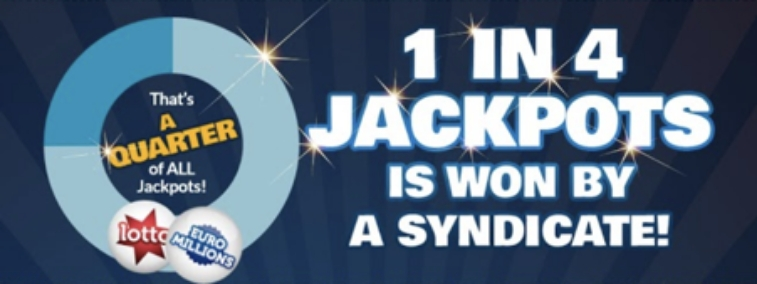

How Do Lottery Syndicates
Work? A Complete Guide
We all want to win the lottery, right?
But how do we improve our odds of winning a life-changing lottery jackpot?
You may have heard of lottery syndicates or ‘group play’ play, as it’s sometimes referred.
Perhaps you’ve played in a work syndicate, where someone collects money and buys tickets on your behalf.
In this post we explain the principals of a lottery syndicate and the benefits and downsides of sharing lottery entries.
The breakdown of what we’ll cover:
- What are lottery syndicates?
- Work lottery syndicates
- Do lottery syndicates win?
- Lottery syndicates gone wrong
- Are lottery syndicates worth it?
What are Lottery Syndicates?
The more times you enter a lottery draw, the more chances you have of winning - but at a larger cost.
In a syndicate you share multiple lottery lines with a group of players, with any prizes won split between all syndicate members.
syndicate /ˈsindikət/
NOUN
1 a group of individuals or organizations combined to promote a common interest.
So, for lotteries, ‘syndicate’ is just a fancy name for people who pool their tickets.
I can remember saying ‘if we don’t make it home just make sure you spend it all’. It was the longest flight of our life!
But, of course, you would also share that jackpot.
Not that we would mind sharing a huge lottery win, as when it comes to huge lottery jackpots that share can make you a millionaire.

Work Lottery Syndicates
Two-thirds of UK syndicates are work based according to UK National Lottery organiser Camelot.
However, they also estimate that only half have written agreements.
A formal and legally binding agreement sounds tiresome but could avoid disputes further down the line.
Important things to include in a syndicate agreement:
- Date is was drawn up
- Syndicate managers name
- Each members’ name
- Which draws will be entered and how many lines
- How much each member will pay and how
- What happens if someone misses a payment
- Procedure when someone leaves the syndicate
- Each members’ share of any prize
- How and when prizes are paid
- Whether the syndicate would want publicity
It should be signed and dated by each member and if the syndicate changes, a new agreement should be drawn up.
That’s right, it can be a painful process, especially with large syndicates.
Don’t forget, prizes are paid to the syndicate manager / ticket purchaser and not group members individually.
The manager should then share the prizes, so syndicates must place a great deal of trust in that person.
Do Lottery Syndicates Win?
Playing via a syndicate is an increasingly popular way to play the lottery around the world.
However, not all lottery operators provide information on whether an individual or syndicate has won a big jackpot, unless the winner or winners decide to go public.
Nonetheless Camelot have previously revealed that ‘one in four’ UK Lotto jackpots are won by syndicates.
There are certainly numerous stories of lottery syndicates that have won jackpots. Here are some of the biggest and best:
Syndicate Winners
In 2016, a five-strong family syndicate from Monmouth in Wales claimed a jackpot of £61million on a EuroMillions rollover.
That’s just over £12million apiece.
Sonia Davies had just undergone successful surgery in America to remove a tumour and, along with partner Keith, felt lucky.
She called daughter Stephanie and her boyfriend Steve, pleading with them to pop out and buy family EuroMillions tickets.
It proved to be the best decision they’d ever made as, along with Stephanie’s sister Courtney, the five became the UK’s biggest known syndicate winners.
I can remember saying ‘if we don’t make it home just make sure you spend it all’. It was the longest flight of our life!
The previous biggest UK syndicate win came back in 2010, when a group of seven co-workers at Hewlett-Packard in Liverpool scooped a £45m EuroMillions jackpot.
Two years later, twelve bus drivers from Northamptonshire made the headlines when they won a £38m EuroMillions pay-out.
The lucky dozen each received a £3.1m share of the haul and quit their jobs immediately.
More recently, a syndicate of six catering staff from Neath Port Talbot hospital hit the jackpot.
The ‘Catering Girls’ shared a EuroMillions jackpot of £25.4million in November 2017.
That’s just over £4.2 million each.
USA Syndicates
Some of the jackpots claimed by syndicates in the United States have been even more impressive.
Little is known about the biggest syndicate winners of all time in the US, although one thing for sure is that they scooped a $487million Powerball jackpot on July 15th, 2016.
The group from New Hampshire have steadfastly maintained their anonymity!
Meanwhile, it was a New Year’s Day to remember for 23 Long Island colleagues when they each took home a share of a $437million Mega Millions jackpot on January 1st, 2019.
The Long Island prize was only marginally bigger than the $420.9million Powerball jackpot won by a syndicate of 20 co-workers from Tennessee in 2016.
The group opted to take an immediate cash pay-out worth $254million - or a shade over $12.7million each.
In 2012 there were three winning tickets for a $656million Mega Millions jackpot.
One of the winning tickets belonged to a group of three colleagues from Maryland’s public education system.
They became known to the media as the ‘Three Amigos’.
Each member of the syndicate put in $20 and together they bought 60 tickets, with each taking away $72.6million.
The group had bought 20 ticket each - the first time that they had pooled their money together!
They also decided to remain anonymous.
A year later, 16 colleagues from New Jersey’s Ocean County Department of Vehicle Services held one of three winning tickets for a $448m Powerball jackpot.
Each member of the ‘Oceans 16’ syndicate collected a lump sum of $3.8million.

Lottery Syndicates Gone Wrong
Unfortunately, not all syndicate wins have a happy ending.
There have been numerous examples from around the world of when things have gone badly wrong.
You’ll be shocked at some of these lottery syndicate horror stories:
Missed Payments
Take, for instance, the tale of Louisa Whitby, member of a longstanding syndicate at a small recruitment company in Liverpool.
Mum-to-be Louisa was absent from work due to a bout of morning sickness on the day syndicate payments were collected.
Consequently, she missed out on a £2.5m share of a £28.8m EuroMillions pay-out!
When her colleagues refused to cut her in, Miss Whitby launched what proved to be an unsuccessful attempt to sue them to secure her share.
Each of them pocketed £2.8 million instead of the £2.5 million they would have earned had she been included.
A similar situation befell Florida country club employee Jeanette French, who failed in a court bid to force fellow syndicate members to share a $16m jackpot.
The 72-year-old grandmother missed work on the day the $1 contributions were collected, having been part of the syndicate for eight years.
Worst of all, she was the person who checked the syndicate tickets and informed other members about the windfall.
She handed back the winning ticket without realising she would be excluded from the group.
Each syndicate member received $1.3 million instead of the $1.1 million they would have done if she had been included.
Failure to pay weekly contributions must be the most common cause of disputes among syndicates and highlights the possible pitfalls of joining a work scheme.
But there have been occasions when one member of the group has simply swindled the others out of their winnings.
Fraud
One famous example of a lottery player accused of cheating fellow syndicate members is the case of Australian Gary Baron.
He collected an Australian Powerball jackpot of $16.6 million in October 2014.
Unsurprisingly, he promptly quit his job and began a spending spree which saw him accumulate property and luxury cars.
But the ‘Powerball Rat’ had been responsible for collecting funds and buying tickets for a syndicate of work colleagues.
Incredibly they only discovered his good fortune by chance.
The lottery company sent him a bottle of champagne to toast his winnings using the very courier company he’d quit.
And yes, the bottle was delivered by a member of the syndicate!
When confronted, Baron claimed to have won the jackpot by himself on a separate ticket.
However, he eventually agreed an undisclosed legal settlement when the rest of the group began legal proceedings against him.
Winning Lotto is like… everybody dreams of it, and it only happened to the lucky few once in a while. This was our shot, and it’s gone. He took it away from us.
Baron's actions were reminiscent of those of Americo Lopes, a highway maintenance worker in New Jersey.
In 2009 Lopes collected a Mega Millions jackpot of $24 million and quit his job claiming he needed foot surgery.
But Lopes had been responsible for a syndicate with five Portuguese colleagues, from whom he kept the windfall a secret.
Months later he told one of them that he had won the lottery a week after resigning.
That proved a big mistake, as suspicions were aroused, and the others soon discovered the true date.
Like Baron would later do, he insisted he’d bought the winning ticket for himself, independent from the syndicate tickets.
Inevitably, the case went to court where a jury unanimously found Lopes guilty of defrauding his former workmates (below).
He was ordered to pay each of them $4 million of the original $24 million.
His actions after the win was crucial in their deliberations.
Not only had he never received the surgery he’d said he needed, he also claimed unemployment benefits after collecting his win.
But Lopes was not happy, with the New Jersey Star-Ledger newspaper quoting him as saying “They robbed me.”
Are Syndicates worth it?
The above are cautionary tales involving informal syndicates, which are often based solely upon trust.
Furthermore, office lottery syndicates offer no money-savings, with every member typically paying the normal price of a line (or lines) to enter each draw.
However, there are additional benefits in playing with an online lottery syndicate service like Ninja Lotto:
1) ValueThe price of each entry into a single draw is pooled between syndicate players, significantly reducing your cost per line
2) VarietyMore lotteries can be entered – not just Lotto and EuroMillions, but the biggest lotteries worldwide
3) SimplicityThe hard work is done for you: finding syndicate members, buying the tickets and checking the results
4) SecurityPrizes are paid directly into each individual winning syndicate members’ accounts
No commitments with Ninja Lotto!
We offer individual syndicates for every UK Lotto, EuroMillions and PowerBall draw
Unlike other syndicate services you don’t need to play multiple draws, just whenever you fancy
EuroMillions SyndicatesConclusion
With all lottery syndicates you increase your chances of hitting the jackpot with more draw entries shared.
But you’ll need to share prize winnings with your fellow syndicate members.
Entering syndicates with colleagues, friends or family can be fun, but also carries a degree of risk without sufficient precautions.
Long-time players could miss out on substantial sums of money due to late or missed payments.
Or even a dishonest syndicate manager!
Playing in online pools with syndicate providers such as Ninja Lotto offers security and reduces the cost of playing.
What do you think of lottery syndicates?
Are you happy to share a jackpot in exchange for more chances to win?
Let us know in the comments below.
Roger Sterling
2h Ago